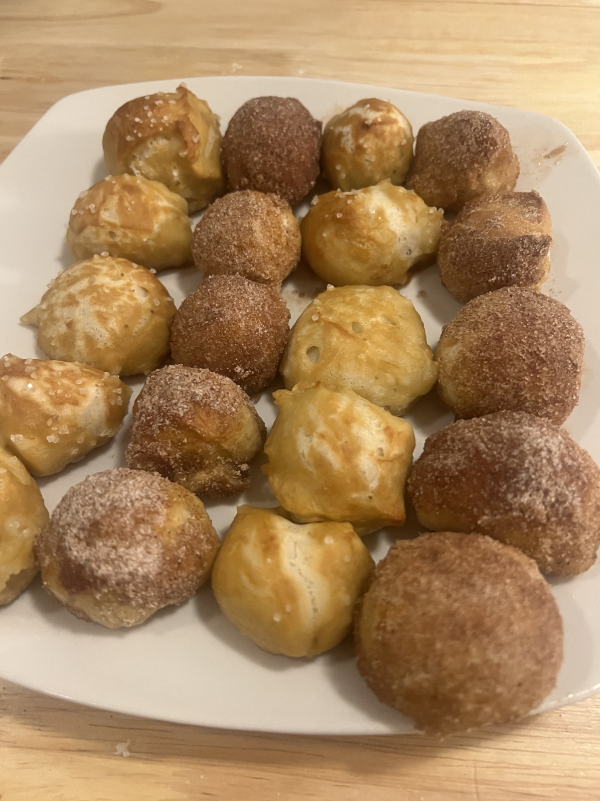
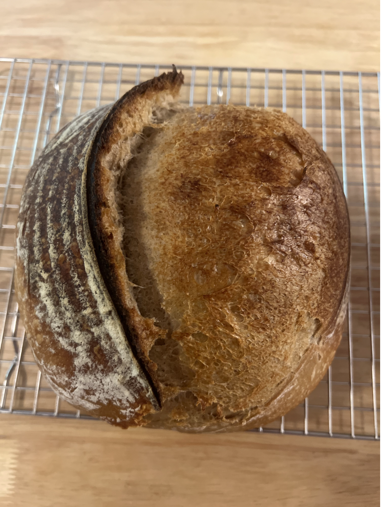
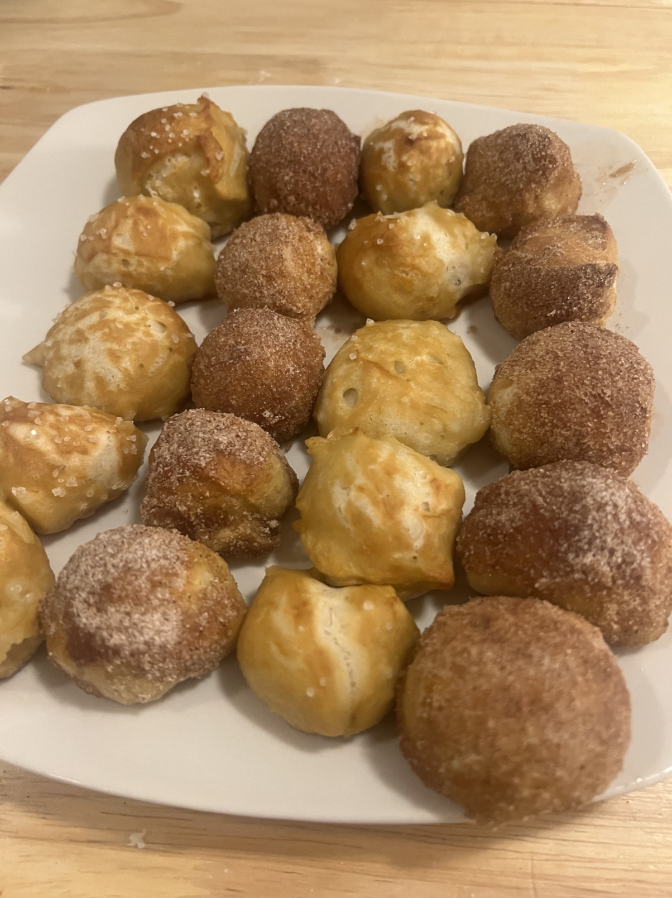
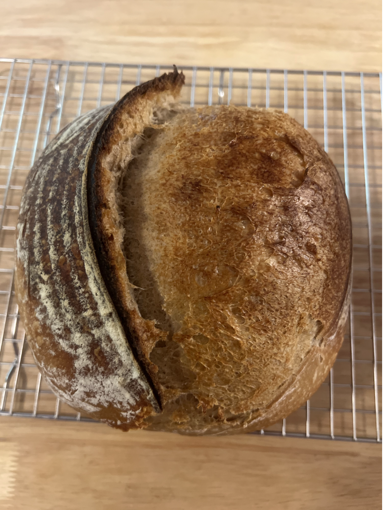
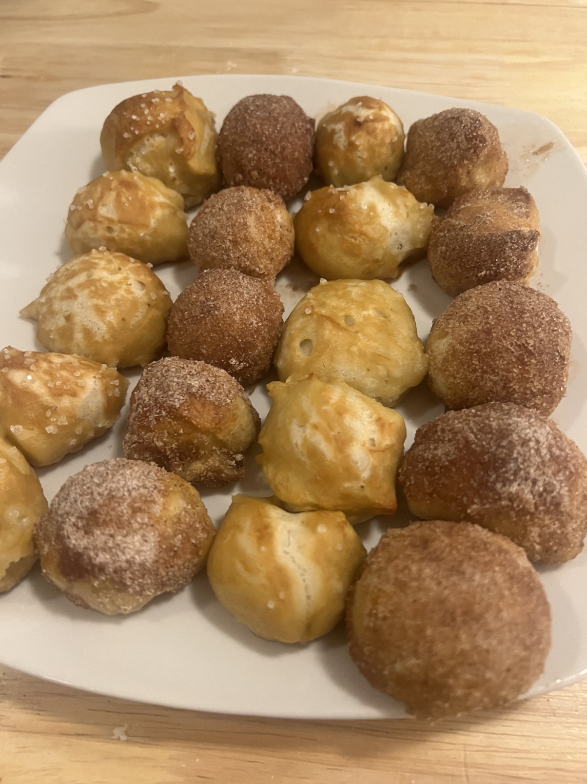
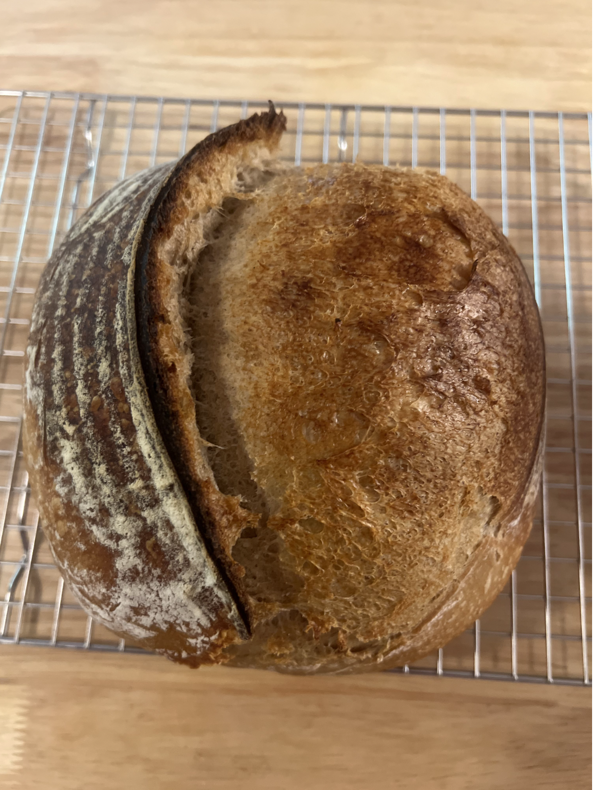
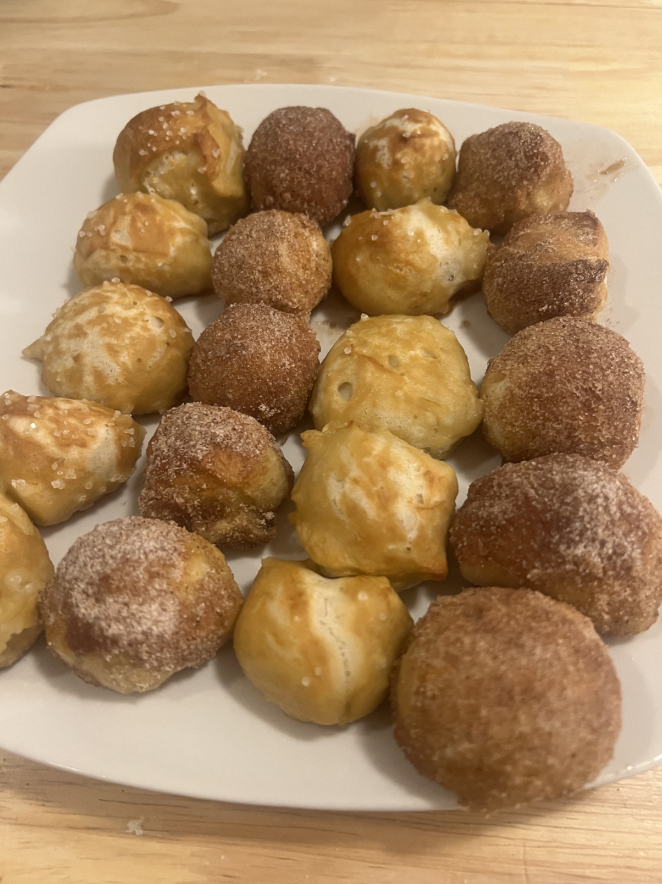
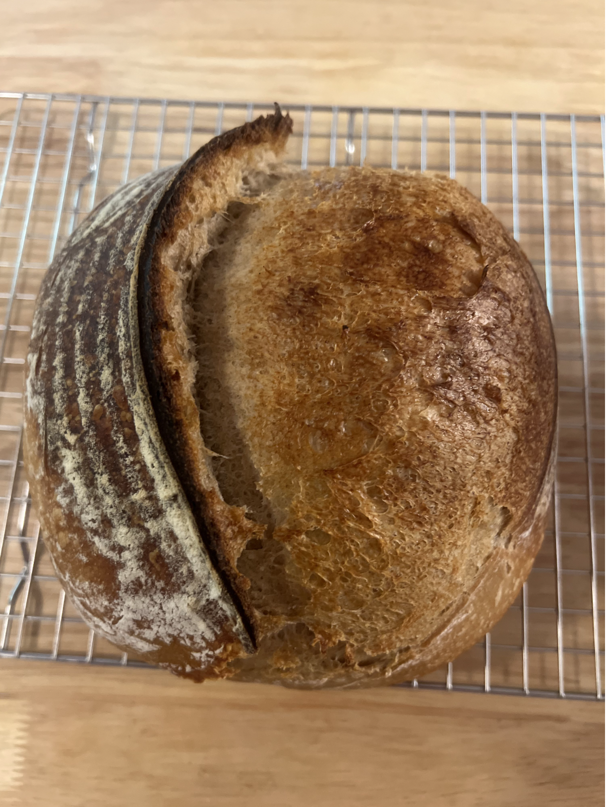

Team 4 Recipe Page!

 



 



A chocolate chip cookie is a drop cookie that features chocolate chips or chocolate morsels as its distinguishing ingredient.
Click here to view the recipe!➜Texas smoked brisket or barbecue brisket, is an American dish made with brisket that is popular in Texas.
Click here to view the recipe!➜Pretzel bites are a delicious pop of soft pretzels and can be topped with a variety of toppings! A great treat for any event!
Click here to view the recipe!➜Sourdough bread is a naturally leavened bread which is fermented only with the wild yeast and bacteria which exists naturally in flour. This recipe only has 3 ingredients which makes for a delicious loaf with no additives.
Click here to view the recipe!➜This super easy chocolate bundt cake is the most moist and decadent cake you will ever make. Be prepared to wow and impress your friends and family at your next gathering!
Click here to view the recipe!➜